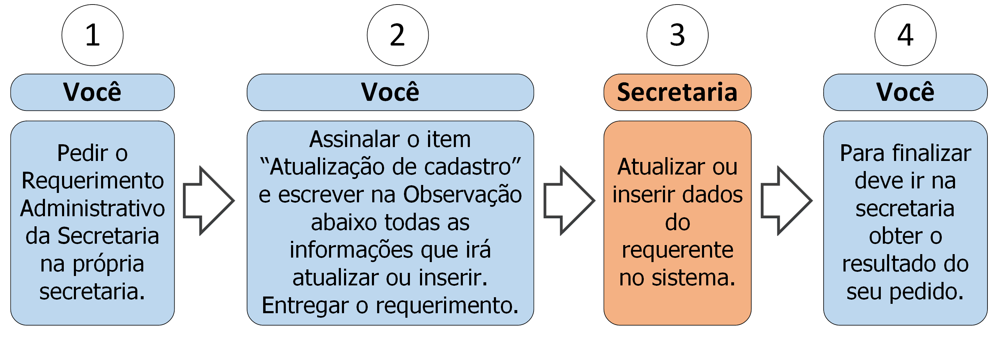

1. Atualização de Cadastro

1.1 Descrição
Toda vez que houver necessidade de atualização ou inserção de algum dado do seu cadastro você deve seguir os seguintes passos:
- A. Peça o Requerimento Administrativo da Secretaria;
- B. Assinale o item “Atualização de Cadastro” e escreva no campo de Observação os dados a serem inseridos ou atualizados;
- C. Entregue o requerimento;
- D. A secretaria irá atualizar ou inserir os dados declarados no seu cadastro;
- E. Vá à secretaria e procure saber sobre o resultado do seu requerimento (ver regra 1 na seção 1.3).
1.2 Documentos necessários
Nenhum.
1.3 Regras
- 1. Prazo de efetivação: A Secretaria tem até 5 dias úteis para atualizar seu cadastro.